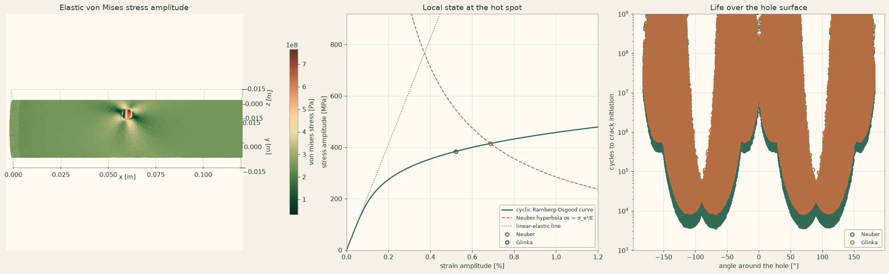
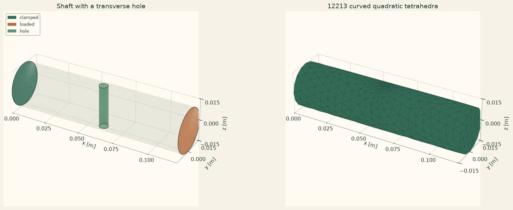

Docs › Examples › Notch approximation for the low-cycle fatigue of a shaft with a transverse hole
Fatigue · 3D
Notch approximation for the low-cycle fatigue of a shaft with a transverse hole
A steel shaft with a transverse hole carries fully reversed tension and torsion; the yielding edge of the hole is estimated from a purely elastic analysis with the Neuber and Glinka notch rules.
Run locally with OneSimulation. The example downloads are free. Running them requires an activated runtime. Runtime Alpha 0.2.1a8 · CPython 3.13 on macOS (Apple Silicon), Ubuntu 22.04 (x86-64), and Windows x64. Installation and activation · View pilot plans. Scope of the reference checks.


What it computes
OneSimulation reads the shaft from a STEP file, solves 3D linear elasticity on curved quadratic tetrahedra refined at the hole, corrects the elastic von Mises amplitude at every point of the hole surface with Neuber's rule and with Glinka's strain energy density rule on the cyclic Ramberg-Osgood curve, and turns the local states into lives with the Smith-Watson-Topper strain-life curve. The script that builds the STEP file comes with the notebook.
What it checks
On 89,321 nodes the axial and shear stresses away from the hole are 179.90 and 100.83 MPa, compared with 180 and 100 MPa from shaft theory. At the 766.5 MPa elastic peak the Neuber and Glinka corrections predict crack initiation at 3,869 and 8,900 cycles.
Geometry
Save the STEP file cylinder_hole_neuber_notch_fatigue.step next to the notebook before running it.


The geometry script
The script cylinder_hole_neuber_notch_fatigue_geometry.py builds the geometry with the CAD objects of OneSimulation and writes the file. Change a dimension there, run it, and run the notebook again.
"""Geometry of the OneSimulation example "Notch approximation for the low-cycle fatigue of a shaft with a transverse hole".
Builds a steel shaft of 30 mm diameter and 120 mm length along x with a transverse through-hole of
6 mm diameter at mid-length (axis along z) with the CAD objects of OneSimulation and writes
cylinder_hole_neuber_notch_fatigue.step. The faces are named clamped (x = 0), loaded (x = 120 mm),
hole and mantle.
"""
from onesim.cad.d3 import Cylinder
radius, length, hole = 0.015, 0.120, 0.003
shaft = Cylinder(radius=radius, length=length, axis=(1.0, 0.0, 0.0)) \
- Cylinder(radius=hole, length=2 * radius + 0.01, origin=(length / 2, 0.0, -radius - 0.005), axis=(0.0, 0.0, 1.0))
shaft = shaft.grouped(clamped=shaft.select(faces=lambda face: face.kind == "plane" and abs(face.center[0]) < 1e-9),
loaded=shaft.select(faces=lambda face: face.kind == "plane" and abs(face.center[0] - length) < 1e-9),
hole=shaft.select(faces=lambda face: face.kind == "cylinder" and face.radius < 0.01),
mantle=shaft.select(faces=lambda face: face.kind == "cylinder" and face.radius > 0.01))
shaft.save("cylinder_hole_neuber_notch_fatigue.step")The notebook
The complete notebook, cell by cell. Run it to produce the figures and the comparison printout.
When a notch yields locally, a full elastic-plastic analysis is the accurate way to its local strain. A much cheaper estimate starts from the linear-elastic notch stress \(\sigma_e\) and corrects it with the cyclic stress-strain curve \(\varepsilon=\sigma/E+(\sigma/K')^{1/n'}\) (Ramberg-Osgood):
Neuber's rule assumes the total strain energy of the notch to be redistributed, Glinka's only the strain energy density; Neuber therefore predicts more local strain, Glinka less. For a fully reversed cycle the amplitudes enter, and with \(\sigma_{\max}=\sigma_a\) the Smith-Watson-Topper parameter \(\sigma_a\varepsilon_a\) gives the life on the strain-life curve \(\sigma_{\max}\varepsilon_a=\frac{\sigma_f'^2}{E}(2N)^{2b}+\sigma_f'\varepsilon_f'(2N)^{b+c}\). Under combined loading the von Mises equivalent of the elastic stress amplitude is corrected.
Setup. Shaft diameter \(D=30\) mm, length 120 mm, transverse hole of \(d=6\) mm at mid-length. Fully reversed, in-phase loading: axial force with a nominal stress amplitude of 180 MPa and a torque with a nominal surface shear amplitude of 100 MPa (gross section). Steel of the SAE 1045 type: \(E=206\) GPa, \(\nu=0.3\), \(K'=1258\) MPa, \(n'=0.208\), \(\sigma_f'=948\) MPa, \(b=-0.092\), \(\varepsilon_f'=0.26\), \(c=-0.445\). The shaft comes from the CAD file cylinder_hole_neuber_notch_fatigue.step, written by cylinder_hole_neuber_notch_fatigue_geometry.py with the CAD objects of OneSimulation.
| face | condition |
|---|---|
clamped | all displacements 0 |
loaded | traction of the force and torque amplitudes |
hole, mantle | free |
Checks. (1) At 25 mm from the loaded end the stresses are the nominal ones, \(F/A\) and \(T r/J\). (2) The peak stress at the hole on a finer mesh. (3) The local states fulfil the two notch rules on the Ramberg-Osgood curve.
import numpy as np
from onesim.cad.exchange import load
from onesim.materials import IsotropicSolid
from onesim.meshing import LocalRefinement, TetrahedralMesher
from onesim.numerics import Numerics
from onesim.numerics.fem import FiniteElement, Lagrange
from onesim.numerics.linear import SparseDirect
from onesim.physics.solid_mechanics import (FixedDisplacement, LinearElasticity, RambergOsgood, StrainLifeCurve, Traction,
TractionFree, glinka_notch, neuber_notch)
from onesim.simulation import Problem, Simulation
from onesim.visualization import plots, theme
theme.set()Geometry and meshes
Curved quadratic tetrahedra of 5 mm, with local resolutions of 0.5 mm and 0.35 mm at the hole.
shaft = load("cylinder_hole_neuber_notch_fatigue.step")
faces = shaft.boundaries
meshes = [TetrahedralMesher(target_size=0.005, geometry_order=2, refinements=(LocalRefinement(region=faces.hole, target_size=size),)).generate(shaft)
for size in (0.0005, 0.00035)]
for mesh in meshes:
print(f"Mesh: {len(mesh.coordinates):,} nodes, {mesh.cell_count:,} elements")
view = plots.Camera(elevation=30, azimuth=-60)
fig = plots.figure(1, 2, size=(15, 5.5))
plots.geometry(shaft, selection={"clamped": faces.clamped, "loaded": faces.loaded, "hole": faces.hole}, labels=False, camera=view,
title="Shaft with a transverse hole", ax=fig[0])
plots.mesh(meshes[-1], groups=("all",), legend=False, camera=view, title=f"{meshes[-1].cell_count} curved quadratic tetrahedra", ax=fig[1])
plots.show()Linear-elastic analysis at the load amplitude
The loading is proportional, so one elastic solution at the amplitude gives the whole cycle.
radius, length, hole = 0.015, 0.120, 0.003
modulus, poisson = 206e9, 0.3
area, polar = np.pi * radius**2, np.pi * radius**4 / 2
force, torque = 180e6 * area, 100e6 * polar / radius
steel = IsotropicSolid(density=7850.0, specific_heat_capacity=460.0, thermal_conductivity=50.0, youngs_modulus=modulus,
poisson_ratio=poisson, thermal_expansion_coefficient=12e-6)
model = LinearElasticity(domain=shaft.volume, material=steel)
problem = Problem(name="Shaft with a hole", geometry=shaft, physics=(model,), boundary_conditions=(
FixedDisplacement(boundary=faces.clamped, physics=model, value=(0.0, 0.0, 0.0)),
Traction(boundary=faces.loaded, physics=model, value=lambda x, y, z: np.column_stack((force / area + 0 * x, -z * torque / polar, y * torque / polar))),
TractionFree(boundary=faces.hole | faces.mantle, physics=model)))
numerics = Numerics(spatial=FiniteElement(element=Lagrange(order=2)), linear_solver=SparseDirect())
results = [Simulation(problem=problem, mesh=mesh, numerics=numerics).solve_stationary() for mesh in meshes]
mises = [result.field(model.von_mises_stress) for result in results]
stress = results[-1].field(model.stress)Nominal stresses and the peak at the hole
Stresses at 25 mm from the loaded end on the axis and at the surface; the peak von Mises stress on the hole surface on both meshes.
station = np.array([[length - 0.025, 0.0, 0.0], [length - 0.025, 0.0, radius * (1 - 1e-4)]])
components = np.asarray(stress.evaluate(station))
print(f"25 mm from the loaded end: σ_xx {components[0, 0] / 1e6:.2f} MPa (F/A = {force / area / 1e6:.2f}), surface shear "
f"{abs(components[1, 3]) / 1e6:.2f} MPa (T r/J = {torque * radius / polar / 1e6:.2f})")
samples = [field.sample(along=faces.hole, subdivisions=3) for field in mises]
peaks = [float(np.max(sample.values)) for sample in samples]
print(f"peak von Mises stress at the hole: {peaks[0] / 1e6:.1f} MPa on {meshes[0].cell_count} cells, {peaks[1] / 1e6:.1f} MPa on "
f"{meshes[1].cell_count} cells (difference {100 * (peaks[0] / peaks[1] - 1):+.2f} %)")Neuber and Glinka at the hole surface
Every sampled point of the hole surface: the elastic von Mises amplitude corrected by both rules on the cyclic curve, the SWT parameter \(\sigma_a\varepsilon_a\) and the life.
cyclic = RambergOsgood(youngs_modulus=modulus, strength_coefficient=1258e6, hardening_exponent=0.208)
life_curve = StrainLifeCurve(youngs_modulus=modulus, fatigue_strength_coefficient=948e6, fatigue_strength_exponent=-0.092,
fatigue_ductility_coefficient=0.26, fatigue_ductility_exponent=-0.445)
elastic = np.asarray(samples[-1].values, dtype=float)
local = {name: rule(elastic, cyclic) for name, rule in (("Neuber", neuber_notch), ("Glinka", glinka_notch))}
lives = {name: life_curve.cycles_from_smith_watson_topper(s * e) for name, (s, e) in local.items()}
hot = int(np.argmax(elastic))
spot = samples[-1].positions[hot]
print(f"hot spot at x = {1e3 * spot[0]:.2f} mm, y = {1e3 * spot[1]:.2f} mm, z = {1e3 * spot[2]:.2f} mm; elastic amplitude {elastic[hot] / 1e6:.1f} MPa "
f"(elastic strain {100 * elastic[hot] / modulus:.4f} %)")
for name, (s, e) in local.items():
print(f"{name:6s}: local stress amplitude {s[hot] / 1e6:6.1f} MPa, strain amplitude {100 * e[hot]:.4f} % "
f"(rule check {s[hot] * e[hot] / (elastic[hot] ** 2 / modulus):.6f} / {float(cyclic.strain_energy_density(s[hot])) / (elastic[hot] ** 2 / (2 * modulus)):.6f}), "
f"SWT {s[hot] * e[hot] / 1e6:.4f} MPa → {float(lives[name][hot]):,.0f} cycles")
print(f"shortest lives over the hole surface: Neuber {np.min(lives['Neuber']):,.0f}, Glinka {np.min(lives['Glinka']):,.0f} cycles; "
f"Glinka/Neuber {np.min(lives['Glinka']) / np.min(lives['Neuber']):.2f}")Figures
Left the von Mises stress amplitude on the surface; middle the cyclic curve with the Neuber hyperbola through the hot spot and both local states; right the life along the edge of the hole against the angle around it.
curve_stress = np.linspace(1e6, 1.2 * elastic[hot], 300)
angle = np.degrees(np.arctan2(samples[-1].positions[:, 1], samples[-1].positions[:, 0] - length / 2))
fig = plots.figure(1, 3, size=(20, 6))
plots.surface(mises[-1], camera=plots.Camera(elevation=60, azimuth=-90), title="Elastic von Mises stress amplitude", ax=fig[0])
plots.line(y={"cyclic Ramberg-Osgood curve": (100 * cyclic.strain(curve_stress), curve_stress / 1e6),
"Neuber hyperbola σε = σ_e²/E": (100 * elastic[hot] ** 2 / modulus / curve_stress, curve_stress / 1e6),
"linear-elastic line": (100 * curve_stress / modulus, curve_stress / 1e6)},
points={name: (100 * e[hot : hot + 1], s[hot : hot + 1] / 1e6) for name, (s, e) in local.items()},
styles={"Neuber hyperbola σε = σ_e²/E": "dashed", "linear-elastic line": "dotted"}, xlimits=(0, 1.2), ylimits=(0, 1.2 * elastic[hot] / 1e6),
xlabel="strain amplitude [%]", ylabel="stress amplitude [MPa]", title="Local state at the hot spot", legend="lower right", ax=fig[1])
plots.line(points={name: (angle, life) for name, life in lives.items()}, scale="logy", ylimits=(1e3, 1e9), xlabel="angle around the hole [°]",
ylabel="cycles to crack initiation", title="Life over the hole surface", legend="lower right", ax=fig[2])
plots.show()Going further
Compare with the full elastic-plastic analysis of the same shaft (example "Low-cycle fatigue of a shaft with a transverse hole"); add a mean load and use the Morrow form life_curve.strain_amplitude(cycles, mean_stress=...); or evaluate the critical plane of the corrected strain tensor.